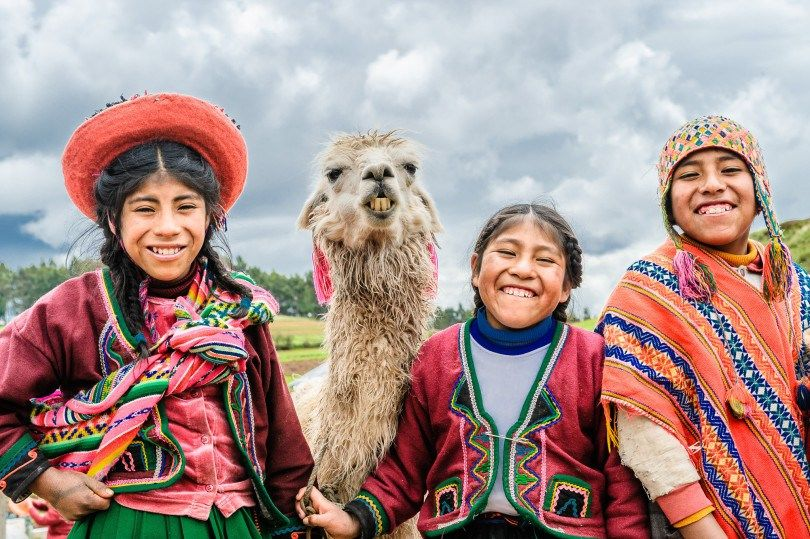
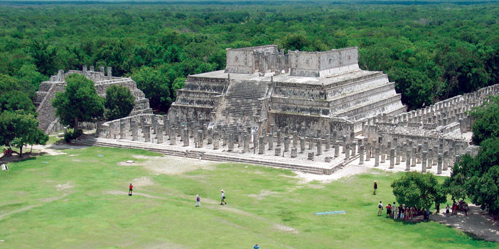
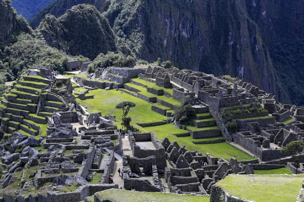

الإنكا
>
إمبراطورية قديمة بنتها شعوب من الهنود الحمر في منطقة أمريكا الجنوبية، كانت أكبر الإمبراطوريات في أمريكا
الجنوبية في العصر قبل الكولومبي, وهي ذات حضارة ضاربة في القدم وتشمل أرض الأنكا بوليفيا والبيرو والإكوادور
وجزءاً من تشيلي والأرجنتين
قاموا ببناء عاصمتهم كسكو وهي مدينة مترفة ومليئة بالمعابد والقصور تقع على ارتفاع 11000 قدم فوق مستوى سطح البحر
في جبال الأنديز وقد أطلق عليها اسم مدينة الشمس المقدسة، تبلغ مساحتها 990000 كيلومتر مربع.
تاريخ شعب الإنكا
بدايتها كانت على جبال الأنديز في حوالي سنة 1100 م ، واستمرت حتى الغزو الأسباني عام 1532 م. بدت حضارة شعوب
الإنكا للناظرين متخلفة في شكلها وطريقة معيشتها ولكنها تركت بصمة عجيبة ومحيرة تلفها الأساطير التي تقول أنهم
أتوا من الفضاء الخارجي
لروعة الإرث الذي تركوه.
توصل شعب الإنكا إلى بناء دولة العدالة الاجتماعية فقد وضعت الحكومة يدها على الأرض لضمان قوت الشعب، والذهب
والفضة ومعادن أخرى وقطعان الماشية وبخاصة حيوان اللاما الذي يقوم بدور المواصلات. وكانت العائلة المقياس الرئيسي
في التقسيمات الحكومية،
فلكل مجموعة من عشرة عائلات قائد مسؤول أمام الكابتن الذي يشرف على خمسين عائلة والذي يشارك في الحكم, ولكل عائلة
مقدار معين من محصول الأرض، كما كانوا يحيكون ملابسهم ويصنعون أحذيتهم ويسبكون الذهب والفضة بأنفسهم, وكان العجزة
والمرضى والفقراء
يلقون رعاية كافية من المجتمع.
كان لشعب الإنكا خبرة في الزراعة حيث كانوا ينتجون محاصيل ممتازة ويشقون السواقي ليجلبوا الماء من المناطق الجبلية
لسقاية حقولهم وقد بنوا جسورا مصنوعة من أغصان الكرمة والصفصاف مجدولة بالحبال.

أتقن الإنكيون نسج القطن الناعم بمهارة حتى أن الأسبان عندما غزوهم اعتقدوا بأن نسيجهم مصنوع من الحرير. بعد قرون
من الرخاء انقسمت إمبراطوريتهم إلى قسمين فقام الأسبان بغزوهم ودمروا الإمبراطورية.
تم الكشف عن بقايا إحدى مقابر الإنكا حيث عثر على حوالي 1200 رزمة في أحد الأماكن على مساحة 5 هكتارات تحتوي كل
منها على جثة واحدة على الأقل، ويصل عدد الجثث الموجود في إحدى الرزم على سبع جثث ولا تزال الألوف منها مدفونة
أسفل البلدة.
حتى الآن تم الكشف عن 2200 رجل وامرأة وطفل من الأغنياء والفقراء إلى جانبهم بعض الطعام والملابس وأدوات منزلية
ليستخدموها في حياة الآخرة.
أمريكا الجنوبية تعد رابع قارات العالم من حيث المساحة.. تنحدر أصول سكانها من قارة أفريقيا.. وتعرف بأراضيها
المتدرجة من قمم سلسلة جبال الأنديز البركانية على طول الساحل الغربي إلى السهول الخصبة في الوسط والشرق والتي
تقطع مراعيها الخضراء
أنهار عديدة تصب معظمها في المحيط الاطلنطي على الساحل الشرقي. تتميز أراضيها بخصوبتها ناثرة الخير في معظم أرجاء
القارة.. جاء إليها البرتغال وتبعهم الإسبان في منتصف القرن السادس عشر إبان أوج مجد الامبراطوريات الأوروبية
وسباقها المحموم نحو
اكتشاف العالم الجديد كما اطلقوا عليه. بهر من تناودا بالحضارة الأوروبية وسيادتها بوجود حضارة ضاربة في القدم
امتدت من شمال الإكوادور وحتى دولة شيلي، بنتها شعوب هندية بدت للناظرين متخلفة في شكلها وطريقة معيشتها ولكنها
تركت بصمة محيرة وأساطير
تقول إنها أتت من الفضاء الخارجي لروعة الإرث المعروف بحضارة شعوب الأنكا.
تحيط ب «قوسقو» العاصمة أربع مدن رئيسية بطرق غاية في دقة الأناقة والتعبيد قدرت أطوالها ما بين عشرة إلى خمسة
وعشرين ألف كيلومتر تعد من عجائب شق الجبال في تلك الحقبة التاريخية ومنها ما هو خاص فقط بالملك وأسرته ومنها ما
هو للخدم، تتجه لأربع
ولايات رئيسية تمثل «شينشايسويو» الموجودة في كولومبيا الحالية و«كونتيسويو» في شيلي الآن و«كولاسيو» في دولة
بوليفيا و«انتيسويو» في الأرجنتين الحالية وتلك المدن التي ما زالت موجودة تبين الحجم الشاسع لأراضي امبراطورية
الإنكا.
معتقدات الإنكا
وبنى الإنكا في الشعوب الوثنية للإضراب كامل، والحيوانات، والطيور مثل: أسد الجبال أو Alcajawar والبومة، والميزات
الطبيعية مثل: الرعد والبرق المعابد لعبادة وحمايتها من الكهنة ويتم تعيين لتكون بمثابة وسطاء بين الجمهور و
Iebdonh «إن» Erakoa
Zachrvo وتلك المعابد بالذهب والأحجار الكريمة وتوفر لهم ذبيحة الغريبة مثل ذبح فتاة يتيمة لم تبلغ فعل الآباء في
بداية موسم الأمطار.. ولكن بعض علماء التاريخ الانتقال إلى تقديس الشمس، ويدعى هذا «Tnithm أنتي» أو ابن الشمس
وبنوا الأهرامات
المدرجة لهذا الغرض للوصول إلى ضوء الشمس فوق الغابات الكثيفة للأدلة Tmantm الهند النسبي وكانوا متحدين بعد نطاق
الإمبراطورية. أنكا واد يسمى ماتشو «بيتشو شامل بيشو» التي يعتبرونها مقدسة وادي نهر، وقطع «Oorobamba» الكتاب
المقدس، انهم حريصون
على حركة المرور ومياه الغسيل ونهر في الاعتقاد بأن وجود قوات خارق الشخص الذي يمر بها، والغريب أنها استيعاب
الحجارة حصاة صغيرة من وادي أو حتى Oashabh وضع تحت اللسان أو الجلد، أو حتى Mkhadahm لهم، والتفكير أنهم أعداء
الجهل، وتجلب الحظ أو
علاج السحر، وزيادة قوة الجنس، وجهاز المناعة ضد الأمراض. برع الأنكا في طب الأعشاب وبخاصة متطلبات الجمال من
الجلد ويفقد من وزنه الصافي ومعالجة أمراض الدم والجهاز الهضمي، حيث اكتشفوا أن التجربة لبعض جذور النباتات في
غابات جبال الأنديز، ودور
في ذلك.

اللغة
اللغات الرئيسية: لغات كتشوا وقد افتقرت الإنكا إلى اللغة المكتوبة٬ في حين أن الصيغة الرئيسية للتواصل والتسجيل
في الإمبراطورية جاءت من خلال الكويبو والكتابة على الخذف بالإضافة إلى لغة الكتشوا (اللغة التي فرضت على سكان
الإمبراطورية). وفرة
الحضارات في منطقة الأنديز قد شجعت على الانقسام العام٬ والذي احتاجت إليه شعوب الإنكا للقمع في سبيل فرض السيطرة
على كامل الإمبراطورية.